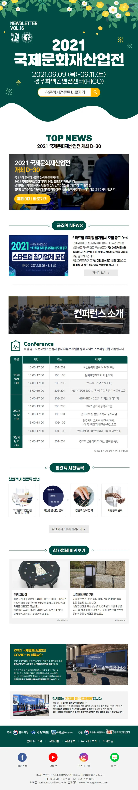
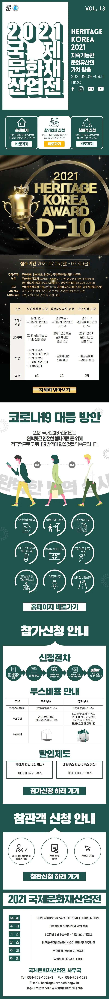
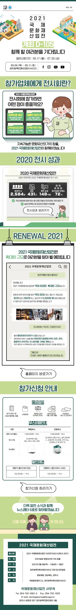

PORTFOLIO 02 · CONTENT DESIGN
뉴스레터
디자인
Notion에 정리된 원본 작업물을 바탕으로, 행사 전 정보를 단계별로 연결한 긴 호흡의 콘텐츠 경험입니다.
문제
행사 정보가 흩어져 있었습니다.
일정·프로그램·참가업체·사전등록 정보를 한 번에 이해하기 어려웠습니다.
해결
읽는 순서대로 정보를 배치했습니다.
행사 소개부터 카운트다운, 프로그램과 참여 안내까지 한 흐름으로 구성했습니다.
Notion 원본 캡처





장점
- 정보 전달력이 높아집니다.
- 사전 참여를 유도합니다.
- 행사 인지도를 높입니다.
- 여러 안내를 한 화면에 연결합니다.
내 역할
콘텐츠 기획 · 정보 구조 설계 · 행사 홍보 · 고객 행동 흐름 구성
자산 구축
한 번 쓰고 끝나는 콘텐츠가 아니라, 다시 쓰는 템플릿을 만들었습니다.
Notion에 새로 만든 Instagram 포스트 템플릿을 축적하고 행사 주제에 맞게 재사용했습니다. 제작 속도를 높이고 채널의 톤과 시각적 일관성을 유지하며, 다음 행사에도 빠르게 확장할 수 있는 콘텐츠 자산입니다.